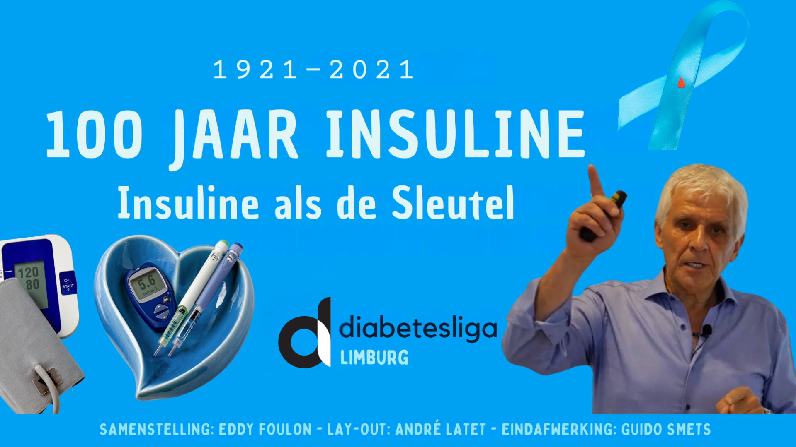
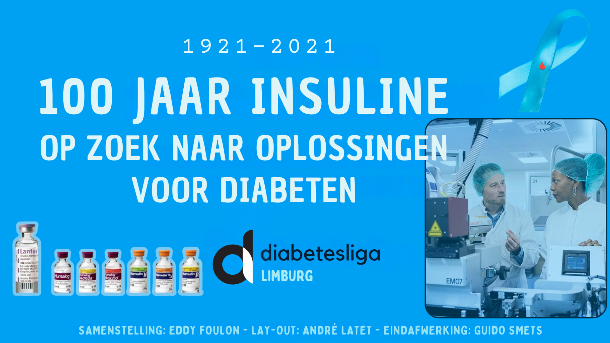
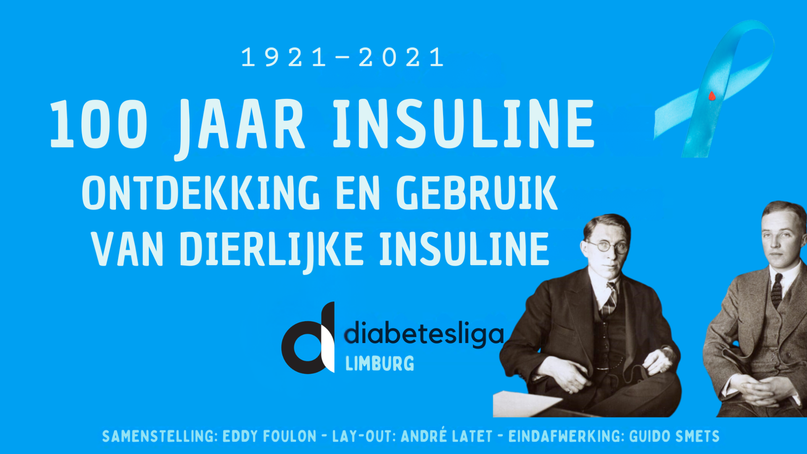
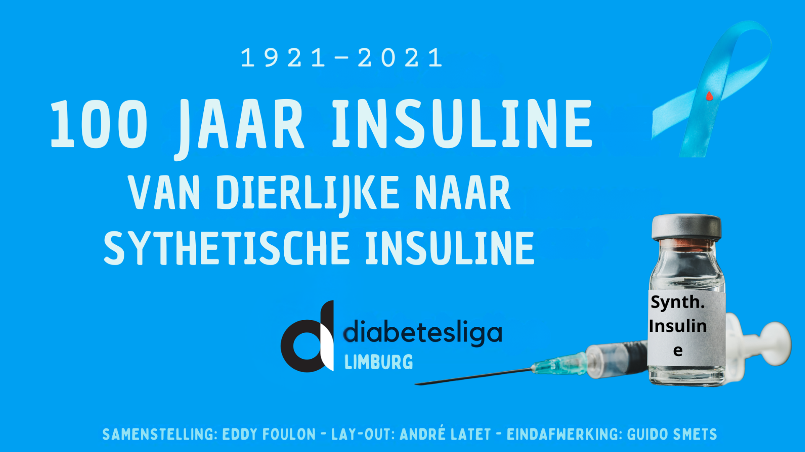
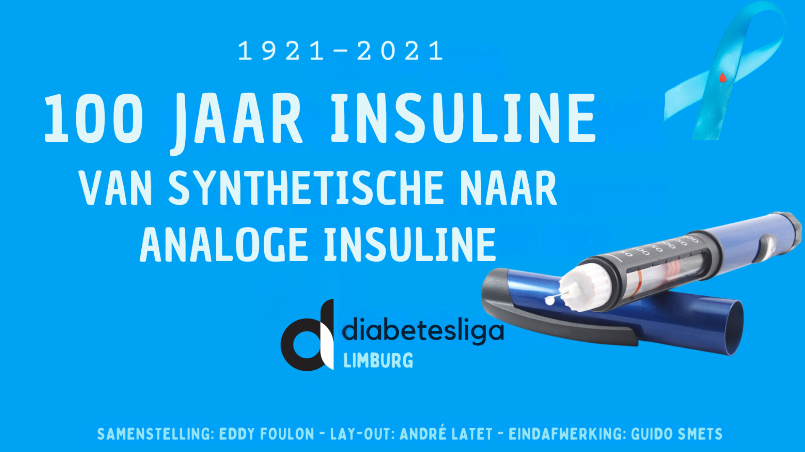

1921–2021
100 jaar insuline
Podcast
Beluister de bespreking
In deze podcast hoort u een samenvattende bespreking in het Nederlands van de video 100 jaar insuline: Insuline als sleutel. De originele video is gemaakt door Eddy Foulon voor de toenmalige Diabetes Liga Midden-Limburg.
De besproken video was een initiatief van de toenmalige Diabetes Liga Midden-Limburg. Meer video’s vindt u op ons YouTube-kanaal.

Zoektocht naar oplossingen voor diabetes

De ontdekking van dierlijke insuline

Van dierlijke naar synthetische insuline

Van synthetische naar analoge insuline
Meer bekijken